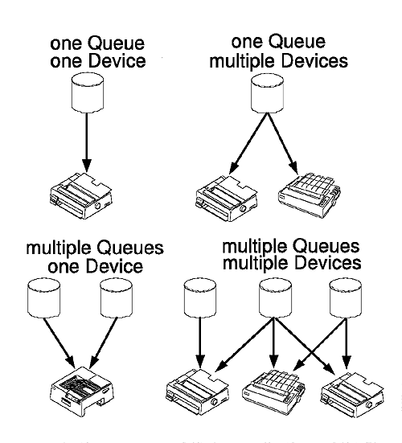

From a user's viewpoint, a printer object represents a printer. The user can specify the printer object settings for configuration; for example, which printer driver and port to use.
From a programmer's viewpoint, print configuration is more complicated. Each printer object actually consists of a queue connected to a logical device. The following figure shows some example configurations. The top-left and top-right pictures show one printer object; the bottom-left picture shows two printer objects; the bottom-right picture shows three printer objects.

Example Configurations of Queues, Devices, and Printer Objects
Multiple queues connected to a single device is termed printer sharing. The advantage of printer sharing is that two queues can have different configurations or be used for different purposes. For example:
A single queue connected to multiple devices is termed printer pooling. This allows print jobs to be shared among printers for load balancing. The spooler does this by printing a job on the next available printer. For example, one printer usually reserved exclusively for special forms could be connected to a normal form queue during peak loads. The special form queue would be held temporarily.
Note: Configuration of a device without a queue is not allowed by the OS/2 operating system.
The logical device has the following configuration parameters that are relevant to application programmers:
For example, a logical device representing an HP LaserJet printer with an installed PostScript option could have both the HP LaserJet printer driver and the PostScript printer driver in its configuration.
Each printer driver in the list also could have printer properties associated with it. Printer properties describe the physical configuration of the printer, such as what size paper is installed.
The queue has the following configuration parameters that are relevant to application programmers:
It is the queue description not the queue name that is used for the printer object title- that is, the text displayed beneath a printer object icon.
Job properties describe the parameters that must be used for printing a specific job. An example of a job property is the orientation. The queue's job property defaults are used if none are supplied by the application.
The configuration data for printer objects is stored in the OS2SYS.INI file. The spooler provides a set of functions that can be used to query and set this data.
Note: Older PM applications might still use the Profile functions (for example, PrfQueryProfileString). If so, these applications must be recoded with the new functions to avoid any dependencies on where and how the system stores configuration data.